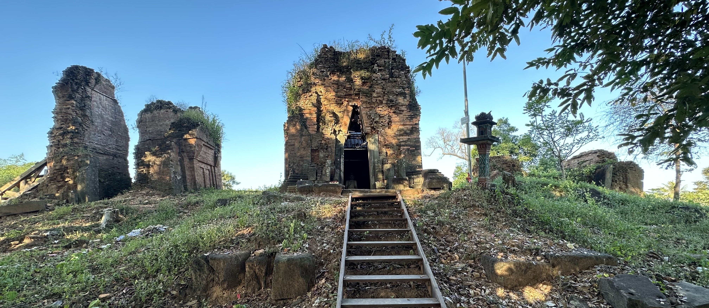
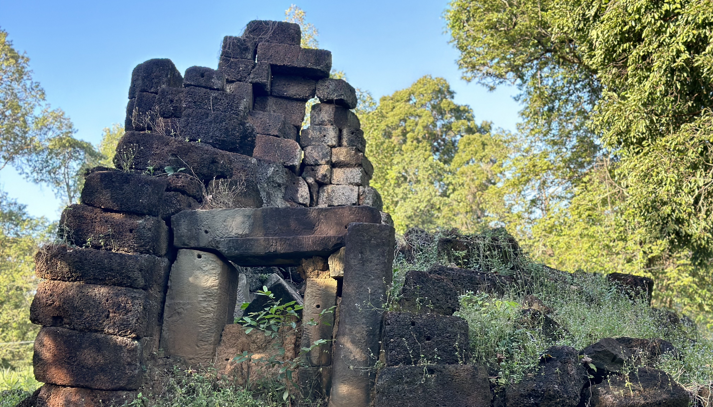
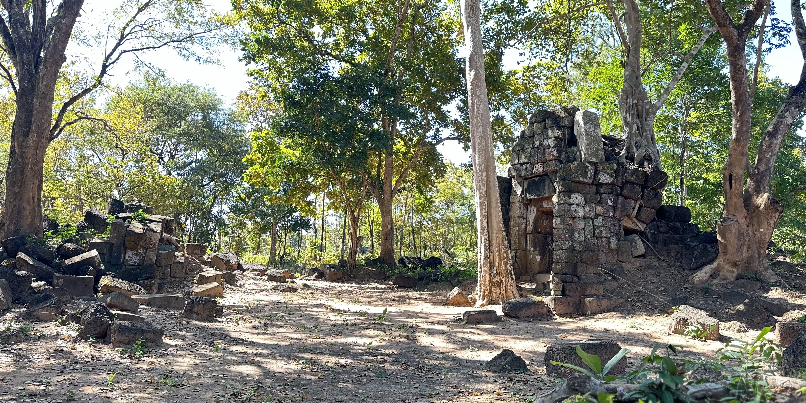
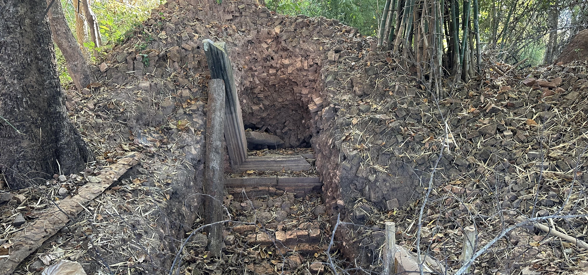
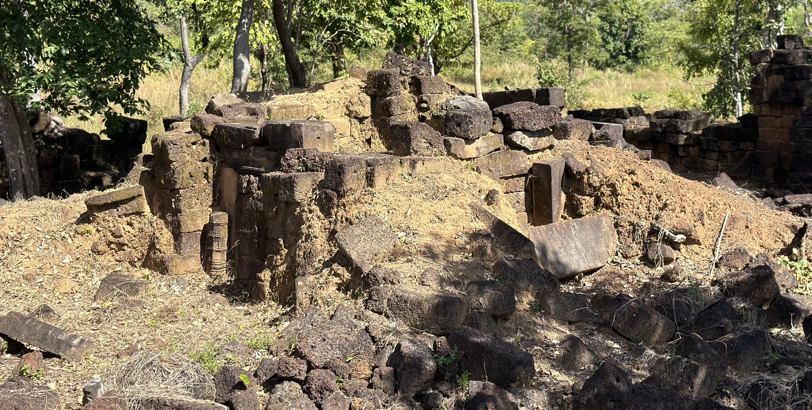

Search Temples, Attractions & Angkor Heritage
1. Prasat Pram ប្រាសាទប្រាំ (ព្រំប្រទល់ខេត្តសៀមរាប-ព្រះវិហារ)
ទីតាំង និងប្រវត្តិ៖ ប្រាសាទប្រាំ គឺជាស្ថាបត្យកម្មបុរាណដ៏មានតម្លៃក្នុងតំបន់កោះកេរ សាងសង់ឡើងនៅសតវត្សរ៍ទី១០។
2. Prasat Pram (Koh Ker) ប្រាសាទប្រាំ (តំបន់កោះកេរ)
ទីតាំង និងប្រវត្តិ៖ ស្ថិតក្នុងតំបន់បេតិកភណ្ឌពិភពលោក UNESCO កោះកេរ សាងសង់ក្នុងសតវត្សរ៍ទី១០។
3. Preah Khan Kampong Svay ប្រាសាទព្រះខ័នកំពង់ស្វាយ
សារៈសំខាន់យោធា៖ ជាក្រុង និងជាមជ្ឈមណ្ឌលយោធាដ៏សំខាន់ក្នុងសម័យអង្គរ។
4. Pong Toek Temple ប្រាសាទពងទឹក
ភាពលាក់ខ្លួន៖ ប្រាសាទបុរាណលាក់ខ្លួនក្នុងព្រៃធម្មជាតិ តំបន់ព្រះវិហារ។
5. Po Damnak Temple ប្រាសាទពោធិ៍ដំណាក់
ប្រវត្តិ និងទីតាំង៖ ប្រាសាទបុរាណសម័យអង្គរដ៏ស្ងាត់ស្ងាត់ ស្ថិតក្នុងឃុំភ្នំត្បែងពីរ ស្រុកគូលែន ខេត្តព្រះវិហារ។

6. Trapeang Prasat Temple ប្រាសាទត្រពាំងប្រាសាទ
ទីតាំង និងប្រវត្តិ៖ ប្រាសាទបុរាណសម័យអង្គរ ស្ថិតក្នុងស្រុកត្រពាំងប្រាសាទ ខេត្តឧត្តរមានជ័យ។

7. Trapeang Prasat Toch Temple ប្រាសាទត្រពាំងប្រាសាទតូច
ទីតាំង និងបរិបទ៖ ប្រាសាទសម័យអង្គរ ស្ថិតនៅស្រុកត្រពាំងប្រាសាទ ខេត្តឧត្តរមានជ័យ។

8. Prasat Toch ប្រាសាទតូច
ទីតាំង និងប្រវត្តិ៖ បូជនីយដ្ឋានតូចតាមដងផ្លូវបុរាណ សម័យព្រះបាទជ័យវរ្ម័នទី៧ ក្នុងខេត្តព្រះវិហារ។
9. Preah Vihear Temple ប្រាសាទព្រះវិហារ
បេតិកភណ្ឌពិភពលោក (UNESCO)៖ សាងសង់ឡើងពីសតវត្សរ៍ទី៩ ដល់ទី១២ លើខ្នងភ្នំដងរែក។

10. Cha Eh Temple ប្រាសាទចាហេ
ទីតាំង និងប្រវត្តិ៖ ប្រាសាទសម័យអង្គរ (សតវត្សរ៍ទី១១) ស្ថិតក្នុងស្រុកជាំក្សាន្ត ខេត្តព្រះវិហារ។
11. Suor Mab Temple ប្រាសាទសួរប៉័ង
ទីតាំង និងប្រវត្តិ៖ ប្រាសាទថ្មឥដ្ឋបុរាណ សម័យអង្គរ ក្នុងតំបន់ខេត្តព្រះវិហារ។

12. Kuk Pros Temple ប្រាសាទកុកប្រុស
ទីតាំង និងប្រវត្តិ៖ ប្រាសាទចុងសម័យអង្គរ (សតវត្សរ៍ទី១២) ក្នុងខេត្តព្រះវិហារ។


No matching temples or archives found. Try another keyword!